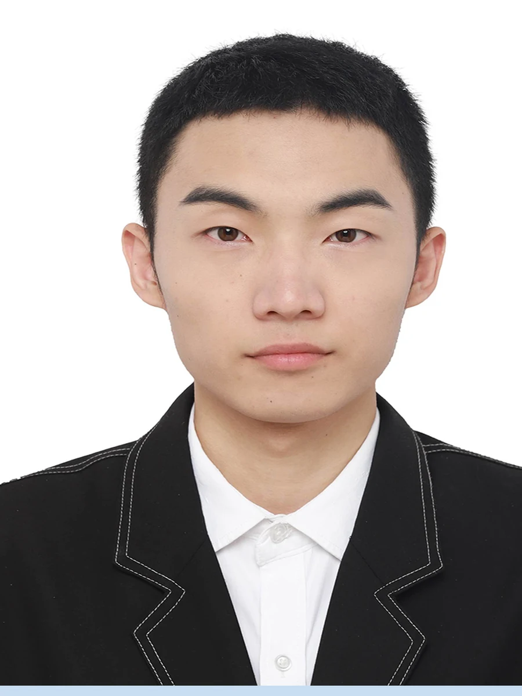

SCROLL TO EXPLORE
PORTFOLIO 2026
01 / 精选
两件最想让你先看的作品
一件关于「陪伴」，一件关于「把传统交到孩子手里」。
02 / 全部作品
12 件作品，4 个方向
点击任意作品进入详情：完整图集、设计过程与视频。支持 Esc 关闭、←→ 切换作品。
没有找到匹配的作品。试试「灯」「三星堆」「福州」。

03 / 关于
在传统与新技术之间，
找一种温和的表达。
我是于佳林，河北石家庄人，福建农林大学产品设计专业 2026 届。我的作品大多从「人」开始：独居的老人、放学的孩子、回到家的三代人。
我喜欢把文化里的旧东西拆开，再用新的材料与交互重新装回去——三星堆的纹饰可以变成一盏儿童灯，福州的三条簪可以变成一枚书签。技术是手段，让人愿意靠近才是目的。
- 院校
- 福建农林大学
- 专业
- 产品设计 · 2026 届
- 绩点
- 3.5 / 4
- 所在地
- 河北石家庄
工具与能力
建模
Rhino · 3ds Max · AutoCAD
渲染
KeyShot · V-Ray
平面
Photoshop · Illustrator · 马克笔手绘
交互
Figma · 即时设计 · 可点击原型
其他
Midjourney · 计算机二级 MS Office
04 / 联系
如果你在找一名
愿意把细节做到底的设计师。
ciyu****@163.com
联系方式做打码处理，避免被爬虫抓取。点下方按钮即可查看完整信息并直接写信。